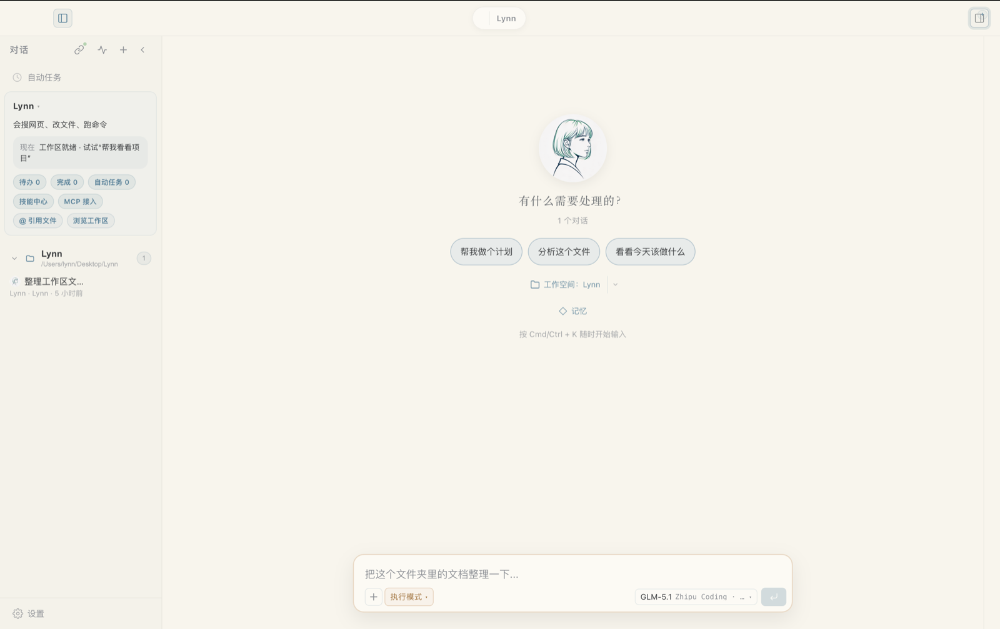

会巡检桌面文件、定时任务和工作清单，不必一直盯着对话框。
Lynn 0.75.2
让 AI 不只会聊天，而是真的在你的电脑上一起工作。
Lynn 是一个有心跳、有记忆、会主动行动、还能多 Agent 协作的桌面 AI 助手。它能记住重要事实、整理文件、巡检工作区、操作工具，并在你不盯着窗口时继续推进任务。
已支持 macOS Apple Silicon / Intel
Windows 安装版可用
mac 版本已签名公证
Lynn 正在待命

记住长期偏好、项目上下文和重要事实，越用越懂你。
不只回复你，还会调用工具、整理结果、继续推进任务。
主助手、复查者和不同角色的 Agent 可以各司其职，相互配合。
核心能力
更像伙伴，也更像真正能干活的桌面助手
Lynn 不是把大模型塞进聊天框，而是把记忆、计划、工具、复查和长期协作真正串起来。
记忆系统
从对话中提取重要事实，沉淀长期偏好、项目背景和技能经验，下次自动召回。
书桌与心跳
把便签、文件和自动任务放到同一个工作区，Lynn 会自己巡视、自己继续做事。
多模型路由
支持默认模型、自己的 API Key 和多供应商配置，任务失败时还能自动降级兜底。
复查闭环
由第二个 Agent 对答案和改动做复查，把发现的问题重新回注到执行链路。
本地工具能力
读写文件、执行命令、浏览网页、搜索信息、分析文档，都能走统一桌面壳层。
安全防护
路径守卫、操作系统沙盒、Prompt Injection 检测和行为确认一起守住本地环境。
典型场景
更适合日常工作，而不只是写代码
每天开工前先理清今天要做什么
让 Lynn 读取当前工作区和便签，给出执行顺序、优先级和风险提醒。
拖一份文档进来，直接让它帮你读和总结
适合会议纪要、方案文档、表格、日报周报和需要归纳的零散资料。
你不在窗口前时，也能继续盯进度
自动任务和心跳巡检会自己工作，完成后把结果回填到桌面和对话里。
让不同 Agent 承担不同风格的工作
主助手负责推进，复查者负责校验，长期任务更稳，结果也更可追踪。
产品定位
不是又一个 AI 聊天窗口，而是能持续协作的桌面伙伴
Lynn 的重点不只是回答问题，而是把记忆、书桌、心跳巡检、自动任务和多模型路由真正串起来，让桌面 AI 能长期跟进事情，而不是一次性对话后就结束。
开箱即用
新用户可以直接走默认模型路径，不必先理解复杂的 API Key、供应商和路由配置。
更像长期协作者
Agent 会积累项目背景、用户偏好和桌面上下文，下一次进入时可以继续从上一次的工作状态接着做。
保留专业能力
文件、终端、搜索、复查、MCP、Bridge 和多 Agent 能力都还在，只是入口更平滑、更适合普通用户。
下载 Lynn
现在就开始用 Lynn
mac 版本已完成 Apple Developer ID 签名与公证。Windows 提供安装版，首次运行可能会出现 SmartScreen 提示，但不影响安装。